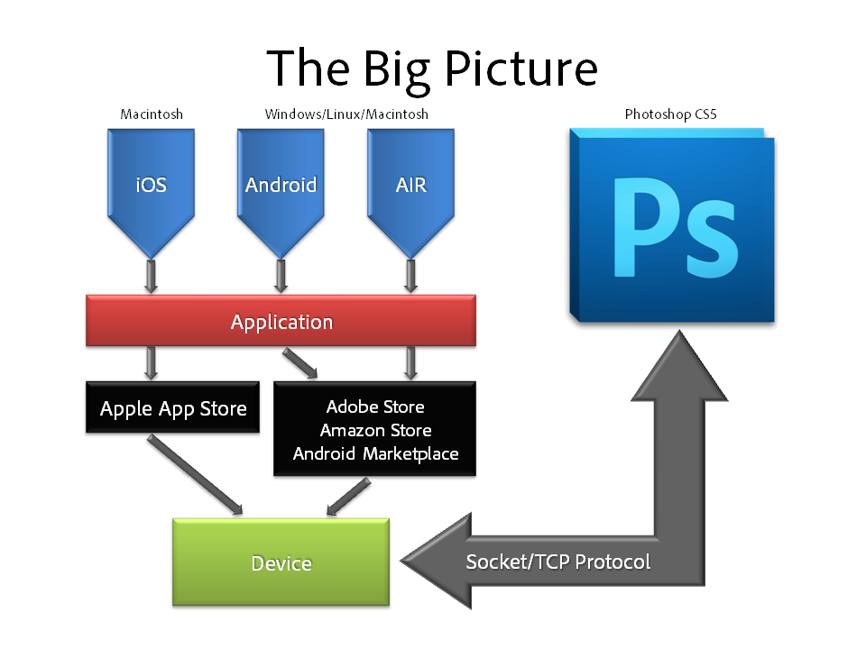
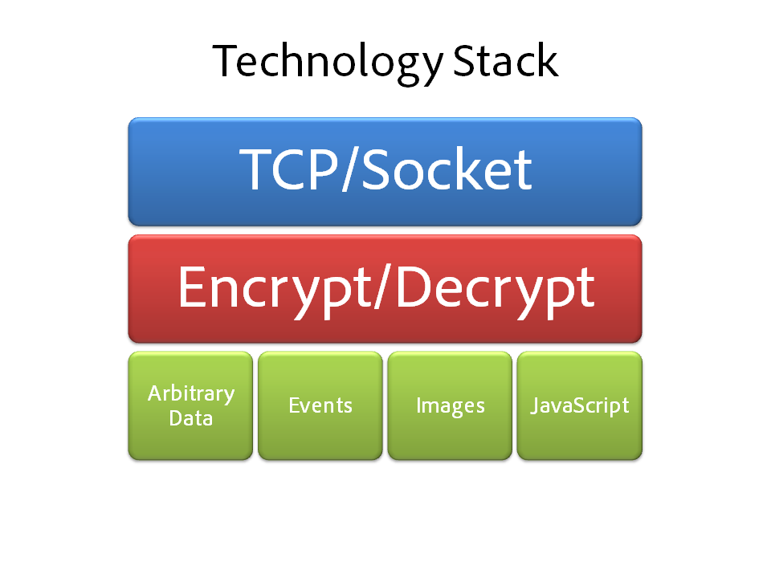
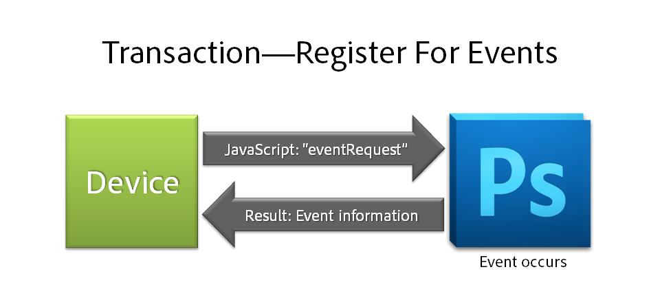
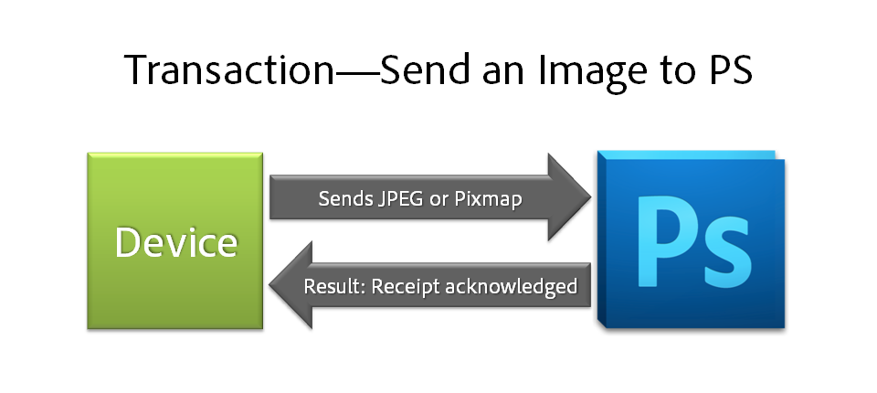
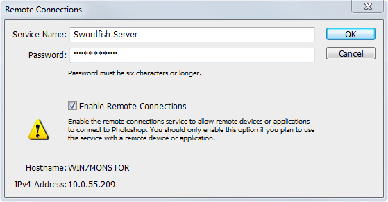

Welcome
Welcome to the .
Imagine a creative environment in which the fun of touch, the potential of mobility, and the power of Adobe Photoshop software meet. The allows applications on Android™, Blackberry, and iOS mobile and tablet devices, as well as Mac OS and Windows® operating systems, to interact with Photoshop CS5.
For developers, we believe that connecting devices and applications to Photoshop offers you new business opportunities by enabling you to deliver greater value to your existing customers, and helps you to acquire new customers by offering new benefits that harness the power of Photoshop in a way that was impossible before.
With this SDK, developers can create and enable apps to drive and/or communicate with Photoshop CS5 (version 12.0.4 or later) via a TCP connection. It’s now possible for developers to create an ebook of Photoshop tutorials that allows users to drive an Action within Photoshop CS5 from within the eBook. Or, if you find yourself inspired by an ocean view, use a tablet device to mix the colors you see and send those colors directly back to Photoshop CS5 without ever leaving the beach. There are so many possibilities, and with the , Adobe is opening Photoshop up to the community to bring these, and other scenarios we haven’t even imagined yet to life.
This SDK delivers a completely new way for people to enhance, transform and enjoy the billions of images captured on devices of all types. We can’t wait to see what you create.
The Photoshop Team
Introduction
Adobe® Photoshop® CS5 includes new technology that allows an application on a mobile device to control Photoshop. This SDK provides documentation and sample projects that detail the process of creating such an application. The Adobe Photoshop interface can sometimes be overwhelming for both new and seasoned users. With the Adobe , developers can now create highly customized applications that can take control of Adobe Photoshop CS5. The potential to streamline or enhance interaction with the application's interface is now limited only by the creativity of the developer community.
Please Note: Adobe® Photoshop® CS5 users that have upgraded to the 12.0.4 release also have access to this feature.
Control in this case is accomplished through configuring Photoshop as a server. Once this is done, a client application can connect to Photoshop via any software program that can communicate over a TCP connection. A TCP connection is typically used via a language that has a socket interface. The Java Socket class found in java.net.Socket is one example of establishing a client-side TCP socket. iOS and Cocoa developers can use the NSNetServiceBrowser or CFStreamCreatePairWithSocketToHost for establishing a connection to Photoshop.
Please see the How Does it Work? section of this SDK for more information regarding the content of messages delivered over the TCP connection.
This SDK will not teach you how to develop applications for your device; it provides details on how to set up and use Photoshop as a server. For information on how to build applications for the device you are targeting, please consult the SDK provided for that device. See the requirements page for links.
There are currently three Adobe Apps available at the Apple App Store. Adobe Nav shows the current tool and the current open documents on a device, as well as allowing users to select tools and change the active document from that same device. Adobe Color Lava provides users a new way to create colors, which can then be sent to Photoshop as swatches. Adobe Eazel is a unique tool for painting with water colors. Images created in Eazel can also be sent to Photoshop.
The Big Picture
The following diagram outlines the basic concepts involved in developing client applications for Adobe Photoshop CS5:
|  |
This SDK is not the only document you will need to build client applications. You will also need the Adobe AIR SDK, Google Android SDK or Apple iOS SDK. Links to those SDK options can be found on the requirements page. You will need a firm understanding of how to develop for the target device or devices before proceeding. Adobe AIR is the best option for device coverage as the examples in this SDK do not cover BlackBerry or Windows Mobile devices. You will also need the Adobe Photoshop CS5 application for testing purposes before you deploy your application to the appropriate store for users to download.
Technology Stack
The following diagram shows the technology stack and displays how transactions are routed inside of Photoshop. The details of each block are described below.
|  |
Transaction Information
The following diagrams should provide an overview of the five different types of transactions that can occur between the client application and the Photoshop server once a connection is established. This section does not discuss message prolog or encryption that occurs on the message. Refer to the detailed information about messages in the How Does It Work? section of this documentation.
Commands to Photoshop
The most common transaction type will involve the client sending a command to the Photoshop server. This example shows how a new document is created from the client and the resulting name of the document is returned to the client application. A client may also use JavaScript to get current information about the state of Photoshop. The result of that JavaScript can then be used to display information on the client application. See the tutorials section for more details on how the samples work.
The client sends var d = documents.add(); d.name; to Photoshop. Photoshop creates the document and returns the name of the new document which is Untitled - 1. See Hello World Android for a working example of such a transaction.
Register for events
The client can ask for the current state of Photoshop using the Commands to Photoshop section above. However, after retrieving the initial state of Photoshop, the client needs to receive updates when things change. If a user switches documents and the client is showing the name of the current document, the client needs to know about the switch. The client can register for events from Photoshop. After the client has registered for events, Photoshop will send the client updates with information. The following example shows how to register for changes to the state of the current active document. This does not refer to changes made to the active document itself, but simply the fact that the user has switched to a new active document. A client can also request information on changes to the current active document; that is covered in the Images section of the tutorials.
|  |
The client sends the following code with an inEvent of currentDocumentChanged to request document changes:
String s = "var idNS = stringIDToTypeID( 'networkEventSubscribe' );";
s += "var desc1 = new ActionDescriptor();";
s += "desc1.putClass( stringIDToTypeID( 'eventIDAttr' ), stringIDToTypeID( '" + inEvent + "' ) );";
s += "executeAction( idNS, desc1, DialogModes.NO );";
s += "'" + subscribeSuccessStr + "'";
messageProcessor.sendJavaScript(s);
Now, if a user switches documents, Photoshop will send a message to the client: currentDocumentChanged\r45. The 45 in this example refers to the document with an id of 45. See the Photoshop Events section for more information and the Android PhotoshopEvents example.
Image from Photoshop to client
A client may request image data from Photoshop. Image data from Photoshop will be in the form of either JPEG data or Pixmap data. See the How Does It Work? section of this documentation for more details on Pixmap structure. The client sends Photoshop the width and height request as well as a document ID. The document is only required if the client requests image data for a document that is not the active document.
Here is an example of the JavaScript code for a JPEG request:
var idNS = stringIDToTypeID( "sendDocumentThumbnailToNetworkClient" );
var desc1 = new ActionDescriptor();
desc1.putInteger( stringIDToTypeID( "width" ), 600 );
desc1.putInteger( stringIDToTypeID( "height" ), 400 );
desc1.putInteger( stringIDToTypeID( "format" ), 1 );
executeAction( idNS, desc1, DialogModes.NO );
Image from client to Photoshop
A client may request that Photoshop create a new image from either JPEG or Pixmap data. For example, a client may wish to display the current picture from the camera on the device. The client creates the JPEG or Pixmap data and sends the transaction to Photoshop with a Content Type of 3. Photoshop will create a new document from the data provided for the image. See the iOS example in the tutorials section.
|  |
Please refer to the detailed information about Content Type in the How Does It Work? section of this documentation.
Arbitrary data to Photoshop
Photoshop can take data supplied by the client and create a temporary file on the server. Photoshop will then respond with the full path to that file. The client can consume this information for various custom uses. See the tutorial on painting in the iOS examples.
Refer to the detailed information about Content Type in the How Does It Work? section of this documentation.
Configuring the Photoshop Server
Before any of the above can happen, the Photoshop Server first needs to be configured. After launching Photoshop, select Edit from the main menu and then choose Remote Connections. The following dialog will appear:
|  |
Configure the dialog, making sure that the remote connection check box is enabled, then click OK to dismiss the dialog. For Windows users, see the Windows Connection How-To section for information about an OS configuration dialog that may appear the first time you enable the server.
Service Name: Type in the name of the server. This name will be visible as a Bonjour service.
Password: Type in a password. This password must be typed into the client application.
Check the Enable Remote Connections check box.
Make a note of the IPv4 Address for non Bonjour service client applications.